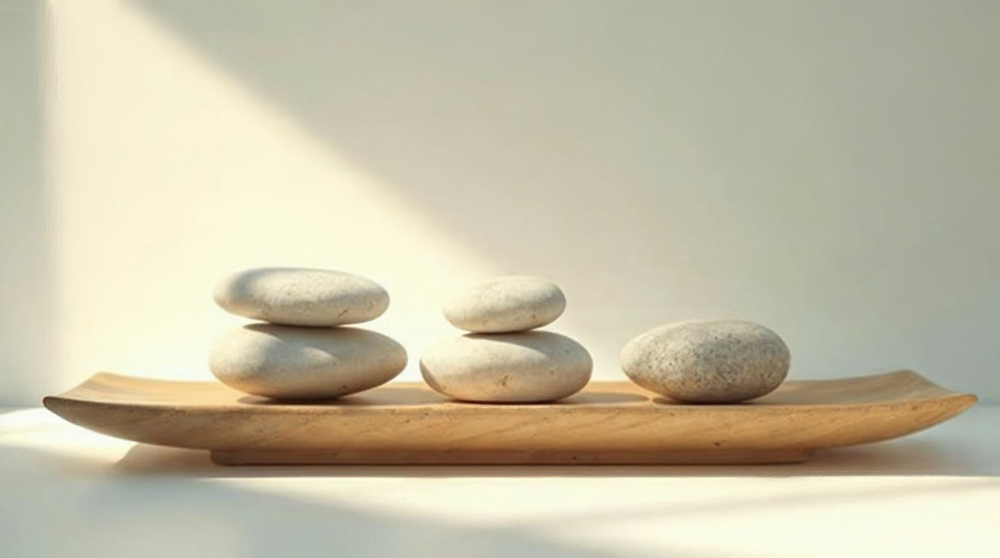
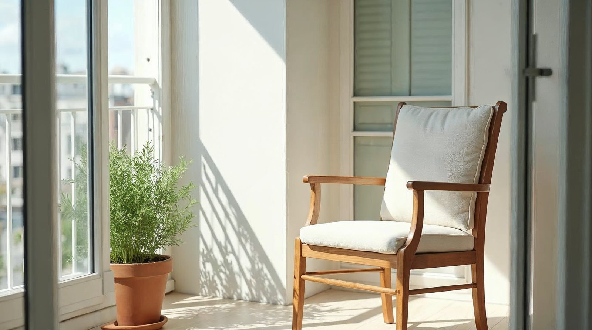
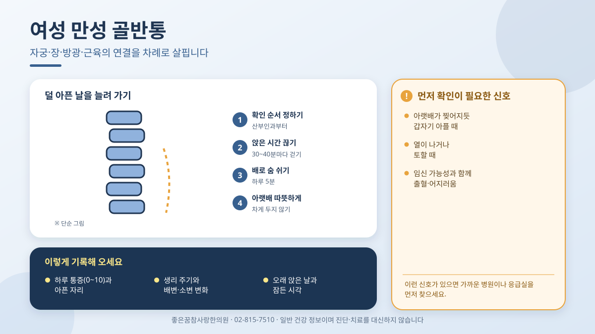

이종호 한의사 감수좋은꿈참사랑한의원 대표원장 (한의사 면허번호 19769)발행 2026-11-26 · 수정 2026-11-27
이 글의 차례
아침에 일어나면 아랫배 깊은 곳이 묵직합니다. 생리 때가 아닌데도 그렇고, 오래 앉아 있으면 골반 안쪽이 뻐근하게 당겨 자꾸 자세를 바꾸게 되죠. 산부인과에서 초음파를 봤지만 특별한 이상은 없다는 말을 들었어요. 다행이라고 생각하면서도, 그럼 이 통증은 대체 뭔지 답답한 마음이 남습니다.
진료실에서 이런 분들을 자주 만나요. 여러 진료과를 돌며 검사를 받고, 그때마다 '괜찮다'는 말을 듣고, 그런데도 아프니까 점점 지치신 분들이요. 제일 먼저 드리고 싶은 말은 이거예요. 아픈 건 분명한 사실이에요. 검사에서 이상이 없다고 해서 괜히 예민한 사람이 되는 건 아니거든요.
배꼽 아래부터 골반 사이의 통증이 여섯 달 가까이 이어질 때 흔히 만성 골반통이라고 불러요. 생리 때만 아픈 생리통과 달리 생리와 상관없이 아프거나, 생리 때 훨씬 심해지면서 다른 때에도 통증이 남아 있는 경우가 많아요.
그러니까 사실은 두 가지를 나눠서 보셔야 해요. '검사에서 이상이 없다'는 것과 '아플 이유가 없다'는 건 다른 얘기예요. 영상에 잘 안 잡히는 근육의 긴장, 장과 방광의 예민함, 잠과 긴장이 통증을 오래 붙잡아 두는 경우가 있거든요.
이 글에서는 어떤 원인을 먼저 확인하는지, 검사에서 이상이 없을 때 어떤 연결을 살펴보는지, 일상에서 뭘 해 볼 수 있는지를 차근차근 정리해 볼게요.
왜 골반 통증은 오래 이어질까요
골반 안에는 자궁과 난소, 방광, 대장의 끝부분이 가까이 모여 있고, 이를 받치는 근육과 인대, 신경이 촘촘히 지나갑니다. 그래서 한 곳에서 시작된 불편이 옆으로 번지기 쉽고, 어디가 아픈지 콕 집어 말하기 어려운 경우가 많습니다.
먼저 산부인과 쪽 원인으로는 자궁내막증과 선근증, 골반 안의 유착, 만성적인 염증, 난소의 낭종 등을 생각합니다. 특히 자궁내막증은 초음파로 잘 보이지 않는 경우도 있어, 생리통이 점점 심해지고 성관계 때 깊은 통증이 있다면 산부인과에서 한 번 더 상의해 보시는 것이 좋습니다.
장과 방광 쪽에서도 골반 통증이 올 수 있습니다. 과민성 장 증후군은 아랫배 통증과 배변 변화를 함께 일으키고, 간질성 방광염은 소변 검사가 깨끗한데도 방광이 차면 아프고 자주 마려운 모습으로 나타납니다. 이 경우는 내과나 비뇨의학과의 확인이 함께 필요합니다.
검사에서 뚜렷한 이상이 보이지 않을 때 자주 놓치는 것이 근육입니다. 골반 바닥을 받치는 골반저근이나 엉덩이 깊은 곳의 근육, 아랫배 근육이 오래 긴장해 있으면 그 자체로 묵직하고 쑤시는 통증을 만들 수 있습니다. 오래 앉아 일하거나, 통증 때문에 몸을 움츠린 채 지내다 보면 이 긴장이 더 깊어집니다.
통증이 오래 이어지면 신경이 작은 자극에도 예민하게 반응하는 쪽으로 바뀌기도 합니다. 처음 통증의 원인이 줄어든 뒤에도 통증의 기억이 남아 있는 것처럼 느껴지는 이유입니다. 이것은 꾀병이 아니라 몸의 신경계가 실제로 달라진 상태입니다.
한의학에서는 이런 모습을 아랫배가 차고 순환이 막힌 흐름, 긴장이 쌓여 기운이 뭉친 흐름 등으로 나누어 설명해 왔습니다. 진찰할 때 몸의 경향을 읽는 전통적인 설명 방식이며, 산부인과 진단을 대신하지는 않습니다.

어떤 순서로 확인하면 좋을까요
만성 골반통은 여러 과를 오가야 하는 경우가 많아 순서를 정해 두면 덜 지칩니다. 저는 대개 산부인과에서 자궁과 난소를 먼저 확인하시도록 권합니다. 초음파와 진찰, 필요하면 추가 검사로 치료가 필요한 원인이 있는지 먼저 보는 것이 출발점입니다.
배변과 관련이 크다면 내과에서 장을, 소변과 관련이 크다면 비뇨의학과에서 방광을 확인합니다. 허리나 엉덩이 통증이 함께 있고 자세에 따라 크게 달라진다면 허리와 고관절 쪽도 함께 살펴볼 수 있습니다.
검사 결과를 한곳에 모아 두세요. 어느 병원에서 어떤 검사를 받았고 어떤 설명을 들었는지 정리해 두면, 다음 진료에서 같은 검사를 반복하지 않고 이야기를 이어 갈 수 있습니다.
여러 병원을 오가다 보면 '이번에도 아무것도 안 나오면 어쩌지' 하는 마음에 진료를 미루게 되기도 합니다. 검사에서 이상이 없다는 결과도 원인을 좁혀 가는 데 쓸모 있는 정보이니, 지금까지 받은 검사가 헛수고였다고 생각하지 않으셔도 됩니다.
생리통과는 어떻게 다를까요
생리통은 생리 직전이나 생리 중에 아프고 생리가 끝나면 가라앉는 것이 보통입니다. 만성 골반통은 생리와 상관없는 날에도 통증이 남아 있거나, 생리 주기의 여러 시점에 통증이 반복된다는 점에서 다릅니다.
생리통이 해마다 점점 심해지거나, 진통제를 먹어도 잘 가라앉지 않거나, 생리 아닌 때의 통증이 늘어나고 있다면 생리통만의 문제가 아닐 수 있습니다. 이런 변화가 있다면 산부인과에서 자궁내막증 등을 다시 상의해 보시는 것이 좋습니다.
근육과 자세는 어떤 영향을 줄까요
진료실에서 배와 골반 주변을 만져 보면, 아랫배 근육이나 엉덩이 깊은 곳, 허벅지 안쪽이 단단하게 굳어 누르면 익숙한 통증이 재현되는 분이 꽤 많습니다. 이런 분은 오래 앉아 있을 때, 다리를 꼬고 앉을 때, 추운 곳에 있을 때 통증이 심해진다고 말씀하십니다.
통증이 있으면 자연스럽게 배와 엉덩이에 힘을 주고 숨을 얕게 쉬게 됩니다. 이 긴장이 하루 종일 이어지면 근육은 더 굳고, 굳은 근육은 다시 통증을 키웁니다. 그래서 숨과 긴장을 함께 풀어 주는 것이 관리의 중요한 부분이 됩니다.
골반저근의 긴장이 의심된다면 골반저 물리치료를 하는 곳에서 상담받는 방법도 있습니다. 이 근육은 조이는 운동보다 먼저 풀어 주는 법을 배우는 것이 필요한 경우가 많아, 혼자 케겔 운동만 열심히 하는 것은 오히려 맞지 않을 수 있습니다.
마음과 잠도 통증과 연결됩니다
오래 아프면 잠이 얕아지고, 잠이 얕으면 통증을 더 크게 느낍니다. 일에 집중하기 어렵고 사람을 만나는 일이 귀찮아지며, 아무도 이 통증을 이해해 주지 않는다는 외로움이 쌓이기도 합니다.
이런 마음의 변화는 통증이 오래 이어진 결과이지, 통증이 마음에서 비롯되었다는 뜻이 아닙니다. 다만 마음과 잠을 함께 돌보면 통증을 견디는 힘이 달라지는 경우가 많아, 진료실에서는 잠과 기분을 꼭 함께 여쭙니다.
성관계 때 통증이 있어 부부 사이에 말 못할 고민이 생기는 분도 계십니다. 혼자 참기보다 산부인과에 상의하시고, 배우자와도 통증에 대해 솔직하게 이야기를 나누는 것이 서로를 위해 좋습니다.
하루의 장면마다 통증이 달라진다면
만성 골반통은 하루 가운데 언제, 어떤 자세에서 심해지는지가 사람마다 다릅니다. 아침에 일어날 때 가장 묵직한 분이 있고, 오후 내내 의자에 앉아 일한 뒤 저녁에 가장 힘든 분도 있습니다. 이 차이를 알면 관리의 초점을 어디에 둘지 정하기 쉬워집니다.
사무실 의자에 오래 앉아 계신다면 엉덩이 아래에 체중이 고르게 실리도록 깊숙이 앉고, 허리 뒤에 작은 쿠션을 받쳐 보세요. 딱딱한 의자에서 골반 아래쪽이 눌려 아프다면 가운데가 비어 있는 방석이 도움이 되기도 합니다.
출퇴근길에 오래 서 있거나 계단이 많은 길을 다니신다면, 한쪽 다리에만 체중을 싣고 서 있지 않도록 신경 써 주세요. 추운 날에는 아랫배와 허리를 덮는 옷차림만으로도 저녁 통증이 덜하다는 분이 많습니다.
밤에 누웠을 때 통증이 심하다면 옆으로 누워 무릎 사이에 베개를 끼우거나, 똑바로 누워 무릎 아래에 베개를 받쳐 보세요. 골반 주변 근육이 조금 느슨해지면서 잠들기 한결 수월해질 수 있습니다.

통증과 함께 지내는 힘을 기르기
통증이 완전히 사라질 때까지 기다리며 모든 일을 미루다 보면, 삶이 통증을 중심으로 좁아집니다. 그래서 통증이 조금 있더라도 할 수 있는 일을 하나씩 다시 해 보는 것이 중요합니다. 짧은 산책, 친구와의 차 한 잔, 미뤄 둔 취미처럼 작은 것부터요.
이렇게 일상의 폭을 넓혀 가면 통증이 차지하는 마음의 자리가 조금씩 줄어듭니다. 통증이 있다는 사실은 그대로지만, 그 통증에 휘둘리는 정도가 달라집니다.
먼저 이렇게 여쭙니다
처음 오시면 대략 이런 순서로 여쭙습니다. 미리 생각해 오시면 이야기가 훨씬 수월해집니다.
- 통증은 언제부터 시작되었고, 어디가 어떤 느낌으로 아픈가요?
- 생리 주기와 통증은 어떤 관계가 있나요?
- 배변이나 소변, 성관계 때 통증이 달라지나요?
- 오래 앉거나 서 있을 때, 추울 때 더 아픈가요?
- 지금까지 받은 검사와 들은 설명은 무엇인가요?
- 잠과 기분은 어떠신가요?
모든 것을 정확히 기억하지 못하셔도 괜찮습니다. 아픈 자리를 손으로 짚어 보여 주시는 것만으로도 많은 것을 알 수 있습니다.
일상에서 먼저 해 볼 수 있는 것
만성 골반통은 한 번에 사라지기보다 조금씩 덜 아픈 날을 늘려 가는 방식으로 관리합니다. 아래 가운데 할 수 있는 것부터 골라 보세요.
- 앉아 있는 시간이 길다면 30~40분마다 일어나 걷기
- 다리를 꼬고 앉거나 한쪽으로 기대앉는 습관 줄이기
- 누워서 무릎을 세우고 배로 천천히 숨 쉬기, 하루 5분
- 아랫배와 허리를 차게 두지 않기
- 변비가 있다면 물과 섬유질, 걷기로 먼저 다루기
- 하루 통증 정도를 0에서 10으로 한 줄씩 적기
배로 숨 쉬기는 생각보다 도움이 됩니다. 누워서 한 손은 가슴에, 한 손은 배에 얹고, 숨을 들이쉴 때 배가 부풀고 내쉴 때 골반 바닥이 부드럽게 풀리는 느낌을 떠올려 보세요. 처음에는 어색해도 며칠 이어 가면 긴장을 알아차리는 힘이 생깁니다.
통증이 심한 날에는 무리하지 않되, 좋은 날에도 갑자기 많이 움직이지 않는 것이 중요합니다. 좋은 날과 나쁜 날의 활동량 차이를 줄이는 것이 통증의 큰 출렁임을 줄이는 데 도움이 됩니다.
한의원에서 함께 살필 수 있는 경우
- 검사에서 큰 이상은 없지만 아랫배와 골반 통증이 이어지는 경우
- 오래 앉거나 추울 때 골반 안쪽과 엉덩이가 묵직하게 아픈 경우
- 생리통과 아랫배 냉감, 손발 차가움이 함께 있는 경우
- 통증 때문에 잠이 얕고 긴장이 잘 풀리지 않는 경우
- 자궁내막증 등으로 산부인과 치료를 받으며 몸 관리를 함께 하고 싶은 경우
좋은꿈참사랑한의원에서는 먼저 아래 '먼저 확인이 필요한' 신호가 없는지, 필요한 검사를 받으셨는지부터 확인합니다. 그다음 맥을 짚고 배와 허리, 엉덩이 근육을 직접 살피며 생리 주기와 배변, 소변, 잠을 함께 여쭙습니다. 진찰한 내용을 바탕으로 침, 온열 관리, 한약 상담 가운데 지금 상태에 맞는 방법을 정합니다.
한약을 상의할 때는 드시는 진통제와 호르몬제, 다른 약을 모두 확인한 뒤 신중하게 정합니다. 산부인과나 비뇨의학과, 내과에서 받고 계신 진료와 약은 그대로 이어 가시면서 함께 보시면 됩니다. 임신 가능성이 있거나 임신을 준비 중이라면 먼저 알려 주세요.
이렇게 기록해 오시면 상담이 쉬워집니다
두세 달 정도 아래 내용을 간단히 적어 보세요. 통증 일기는 원인을 찾는 데에도, 나아지는 흐름을 확인하는 데에도 쓸모가 있습니다.
- 하루 통증 정도(0~10)와 아픈 자리
- 생리 시작일과 끝난 날, 생리통 정도
- 배변 횟수와 변의 모양, 소변 때 불편
- 오래 앉았던 날, 추운 곳에 있었던 날
- 잠든 시각과 깬 시각
- 진통제를 드신 날과 시각
기록이 쌓이면 통증이 생리 주기를 따라가는지, 배변이나 자세와 더 관련이 있는지가 조금씩 보입니다. 그 연결을 찾는 것이 관리의 방향을 정하는 실마리가 됩니다.
이해받는 것부터 시작합니다
만성 골반통을 겪는 분들은 '검사에서는 괜찮다는데'라는 말을 여러 번 들으며 지쳐 계신 경우가 많아요. 아프다는 건 분명한 사실이고, 그 통증을 함께 들여다보는 것부터가 시작이에요.
오래된 통증은 한 번에 세게 밀어붙인다고 물러서지 않는 경우가 많아요. 그래서 저는 약하게, 오래, 매일을 말씀드려요. 큰 운동 계획보다 날마다 할 수 있는 작은 것 하나가 더 오래 이어지거든요.
몸을 살피고 굳은 곳을 다루는 건 제가 맡을게요. 대신 하나만 부탁드려요. 앉아 있는 시간을 중간중간 끊어 주세요. 한 번씩 일어나 몇 걸음 걷는 정도면 돼요. 다른 건 지금 하시던 대로 두셔도 괜찮아요.
통증 기록과 검사 결과를 들고 오시면 다음 걸음을 함께 정해 볼게요. 그동안 혼자 견뎌 오신 얘기도 편하게 들려주세요. 오시면 같이 보면 돼요.
이런 증상은 먼저 확인이 필요합니다
- 갑자기 아랫배가 찢어지듯 심하게 아프면서 열이 나거나 토하는 경우
- 임신 가능성이 있는데 아랫배 한쪽 통증과 함께 출혈이나 어지러움이 있는 경우
이런 신호가 있으면 한의원보다 가까운 병원이나 응급실을 먼저 찾으세요.
함께 읽으면 좋은 글
- 자궁내막증이 있다고 들었을 때, 생리통과 골반 통증은 어떻게 함께 살피나요?
- 소변 검사는 깨끗한데 방광이 아프고 자꾸 마려운 간질성 방광염(방광통증증후군)은 어떻게 살피나요?
- 배가 자주 아프고 설사·변비가 반복되는 과민성 장 증후군은 어떻게 살피나요?
- 자궁근종이나 자궁선근증이 있다고 들었을 때 한의원에서는 무엇을 함께 살피나요?
- 손을 얹으면 아랫배만 유난히 차가운 하복냉은 왜 생기고 어떻게 살피나요?

여쭙는 것
- 통증은 언제부터 시작되었고, 어디가 어떤 느낌으로 아픈가요?
- 생리 주기와 통증은 어떤 관계가 있나요?
- 배변이나 소변, 성관계 때 통증이 달라지나요?
생활에서 해 볼 것
- 앉아 있는 시간이 길다면 30~40분마다 일어나 걷기
- 다리를 꼬고 앉거나 한쪽으로 기대앉는 습관 줄이기
- 누워서 무릎을 세우고 배로 천천히 숨 쉬기, 하루 5분
한의원에서 함께 살필 것
- 검사에서 큰 이상은 없지만 아랫배와 골반 통증이 이어지는 경우
- 오래 앉거나 추울 때 골반 안쪽과 엉덩이가 묵직하게 아픈 경우
- 생리통과 아랫배 냉감, 손발 차가움이 함께 있는 경우
먼저 확인이 필요한 신호
- 갑자기 아랫배가 찢어지듯 심하게 아프면서 열이 나거나 토하는 경우
- 임신 가능성이 있는데 아랫배 한쪽 통증과 함께 출혈이나 어지러움이 있는 경우
한눈에 보는 표
| 구분 | 핵심 |
|---|---|
| 여쭙는 것 | 통증은 언제부터 시작되었고, 어디가 어떤 느낌으로 아픈가요? 생리 주기와 통증은 어떤 관계가 있나요? |
| 생활에서 해 볼 것 | 앉아 있는 시간이 길다면 30~40분마다 일어나 걷기 다리를 꼬고 앉거나 한쪽으로 기대앉는 습관 줄이기 |
| 한의원에서 함께 살필 것 | 검사에서 큰 이상은 없지만 아랫배와 골반 통증이 이어지는 경우 오래 앉거나 추울 때 골반 안쪽과 엉덩이가 묵직하게 아픈 경우 |
| 먼저 확인이 필요한 신호 | 갑자기 아랫배가 찢어지듯 심하게 아프면서 열이 나거나 토하는 경우 임신 가능성이 있는데 아랫배 한쪽 통증과 함께 출혈이나 어지러움이 있는 경우 |
자주 묻는 질문
검사에서 이상이 없다는데 왜 계속 아플까요?
근육의 긴장, 장이나 방광의 예민함, 오래된 통증으로 신경이 예민해진 상태처럼 영상 검사에 잘 드러나지 않는 이유가 있을 수 있습니다. 통증 기록을 바탕으로 연결을 함께 찾아봅니다.
골반 통증에 케겔 운동을 하면 좋을까요?
골반저근이 이미 긴장해 있는 경우에는 조이는 운동보다 푸는 법을 먼저 익히는 것이 맞을 수 있습니다. 골반저 물리치료 상담을 받아 보시는 것도 방법입니다.
진통제를 계속 먹어도 괜찮을까요?
처방받은 방법대로 드시되, 오래 드시게 된다면 처방한 선생님과 위장 상태와 복용 방법을 상의해 보세요. 혼자 양을 늘리지 않는 것이 좋습니다.
한의원에서는 골반 통증을 어떻게 진료하나요?
진찰한 뒤 배와 허리, 엉덩이 근육 상태와 몸의 흐름을 보고 침, 온열 관리, 한약 상담 가운데 맞는 방법을 정합니다. 드시는 약을 확인하고 다니시는 병원 진료와 함께 갑니다.
따뜻한 찜질을 해도 되나요?
많은 분이 편안하다고 느끼십니다. 옷 위로 적당한 온도에서 짧게 하고, 잠들 때까지 붙여 두지 않도록 주의해 주세요.
좋은꿈참사랑한의원은 재진 때 지난번 이야기부터 이어서 여쭙니다. 진료시간과 예약은 오시는 길에서 확인하세요.
어디서 상담받을 수 있나요?
좋은꿈참사랑한의원은 서울 동작구 만양로2길 2 신성빌딩 3층·5층(서울 동작구 상도동, 7호선 상도역 3번 출구 근처)에 있습니다. 한의사 3명(이종호 대표원장, 조영기 수석진료원장, 정원영 진료원장)이 진료합니다. 진료시간은 평일 09:30~20:00(점심 13:00~14:00), 토·일·공휴일 09:30~15:00이며, 방문 전 전화로 확인을 권합니다. 예약은 네이버 예약, 카카오톡 상담, 전화 02-815-7510로 받습니다.
이 글은 일반적인 건강 정보이며 개인의 진단이나 치료를 대신하지 않습니다. 증상이 있거나 복용 중인 약이 있다면 진료를 통해 확인하세요. 치료 효과는 개인마다 다를 수 있습니다.
작성 기준: 일반적으로 알려져 있는 건강 정보를 참고해 정리했습니다(대표원장 감수). 증상 기록은 1~2주 동안 하루 1회, 비슷한 시간에 적어 오시면 지난 상태와 비교하기 쉽습니다.